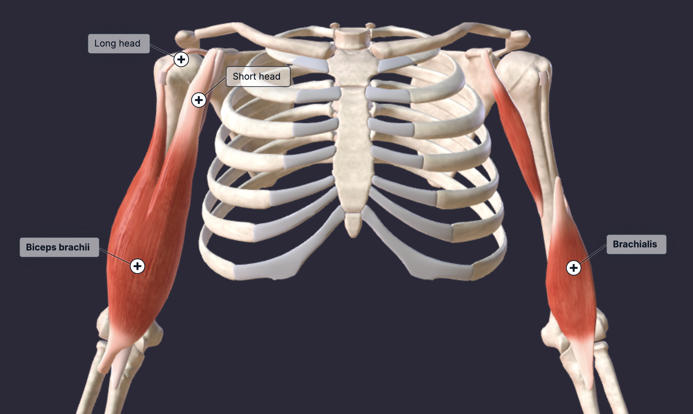

The biceps brachii, commonly known as the biceps, is a large, thick muscle on the upper arm's ventral portion. The muscle is composed of a short head and a long head. The long head is located on the lateral side of the biceps brachii, while the short head is located on the medial side. The main functions of the biceps are the flexion and supination of the forearm. The biceps brachii are more advantaged and active when the forearm is supinated (palm facing up) compared to a neutral or pronated grip. The brachialis muscle is the strongest flexor of the elbow in the absence of supination. The brachialis muscle is located deep to the biceps brachii.
Since we are trying to target the biceps brachii, rather than the brachioradialis muscle, any supinated curl will work.
Notice that there aren't any curl variations that target the brachialis muscle. This is because the brachialis becomes advantaged when the forearm is neutral or pronated, but this disadvantages the biceps brachii. Thus we will talk about it in the forearm section alongside the brachioradialis muscle.
Pick one exercise and do 2-3 sets based on your preference.
